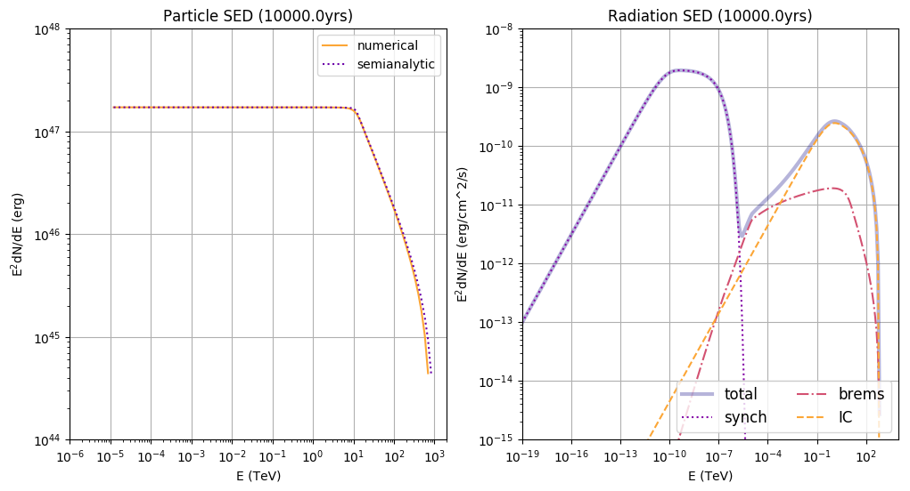
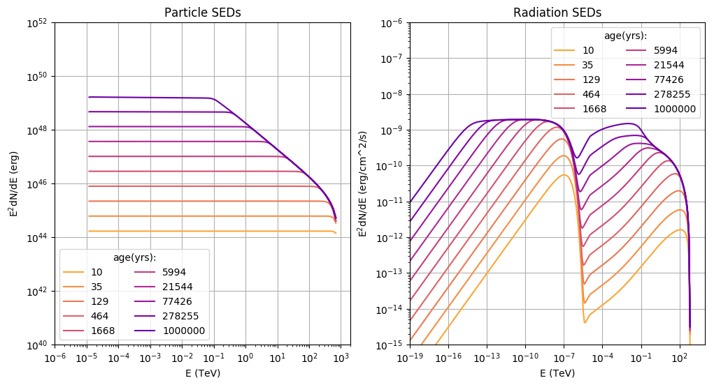

Step-by-step: Time independent modeling of Particle Spectra
This tutorial will cover the scenario where a injected population of electron evolves in a static system. By that it is meant that magnetic field and other environmental parameters as well as the injection spectrum don’t change over time.
Step 1: create a Particles-object
import gappa as gp
fp = gp.Particles()
Step 2: Set up the injection spectrum
Here we will set a power law injection spectrum
# powerlaw with spectral index = 2, norm = 1e37 erg/s,
# e_ref = 1TeV, range between 10MeV and 1PeV
e = np.logspace(-5,3,bins) * gp.TeV_to_erg
power_law = (e/gp.TeV_to_erg)**-2
# renormalise to 1e37 erg/s
fu = gp.Utils()
power_law *= 1e37/fu.Integrate(list(zip(e,e*power_law)))
# zip and set it up in the Particles-object
fp.SetCustomInjectionSpectrum(list(zip(e,power_law)))
Step 3: Set up environmental parameters
environmental parameters like B-Field and ambient density are set via Setter-functions:
fp.SetBField(b_field) # in Gauss
fp.SetAmbientDensity(density) # in particles/cm^3
fp.AddThermalTargetPhotons(temperature,energy_density) #in K, erg/cm^3.
Note 1: There is a dedicated tutorial on how to set radiation fields for the IC process.
Note 2: Environmental parameters determine the cooling rate of electrons. Check this tutorial on how to visualise this information.
Step 4: Set the source age
the specified system will be evolved to the point in time t = age. You can set the age via
fp.SetAge(age) # in yrs
Step 5: Compute the time evolution
Finally, the spectrum can be calculated:
Electrons:
fp.CalculateElectronSpectrum()
Protons:
fp.CalculateProtonSpectrum()
Step 6: Get the particle spectra
You can access the result via two options:
sp = fp.GetParticleSpectrum() # returns diff. spectrum: E(erg) vs dN/dE (1/erg)
sed = fp.GetParticleSED() # returns SED: E(TeV) vs E**2*dN/dE (erg)
Results
Here are two working scripts incorporating the above steps:
- spectrum at a given time
producing this plot:

see the optional steps below to learn more about the semi-analytical solution - time series
producing this plot:

Optional Steps
Set up a particle escape term
there are several options for this. Either a constant, an energy-dependent, a time-dependent or a both energy- and time-dependent escape time can be applied. Here you can learn how to do this. The easies case, a constant escape time, is set up like this:
fp.SetConstantEscapeTime(t_esc) # in seconds
Set starting point of iteration
The program needs to know at which point in time to start the iteration. It will then set the initial condition of the system accordingly. Per default, a starting time of tmin = 1yr will be assumed, which is OK for sources that evolve on time scales larger than tens of years. If you are interested in modeling sources that develop at a smaller time scale, you have to set tmin appropriately:
fp.SetTmin(tmin) # yrs
Note: The initial condition is assumed to be the result of loss-free injection of particles until t = tmin. The spectral shape of the injection up until this point is fixed to the value at t = tmin, i.e. Q(t<=tmin) = Q(t=tmin). Only at t>tmin will cooling, escape and the actual evolution of Q be taken into account.
Set solver method
If you are sure that the energy losses are constant in time and you haven’t set particle escape, you can also use a semi-analytical solver to the transport equation (for more infos, see here with the following command:
fp.SetSolverMethod(1)
Please note that this will give you wrong results if you have time-dependent losses, like changing B-fields, adiabatic losses etc.!
This method is less flexible but more precise in those cases where it is applicable.